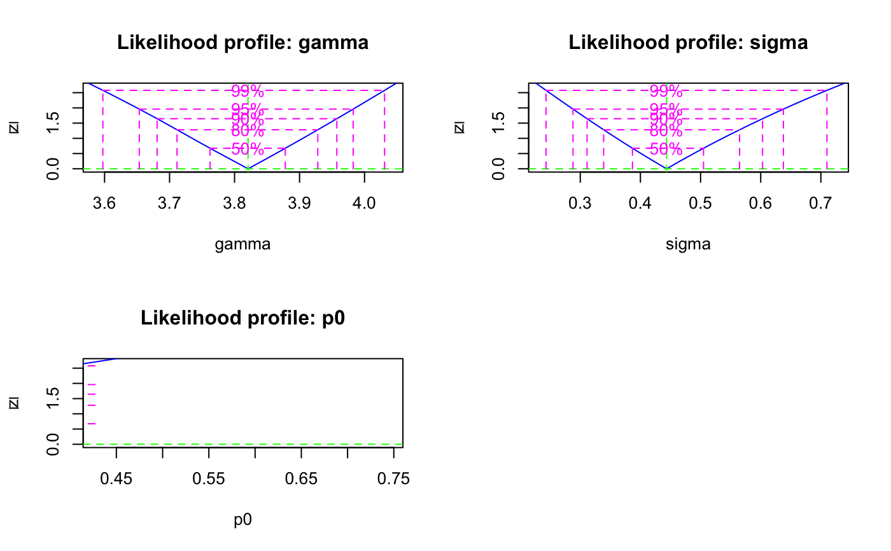
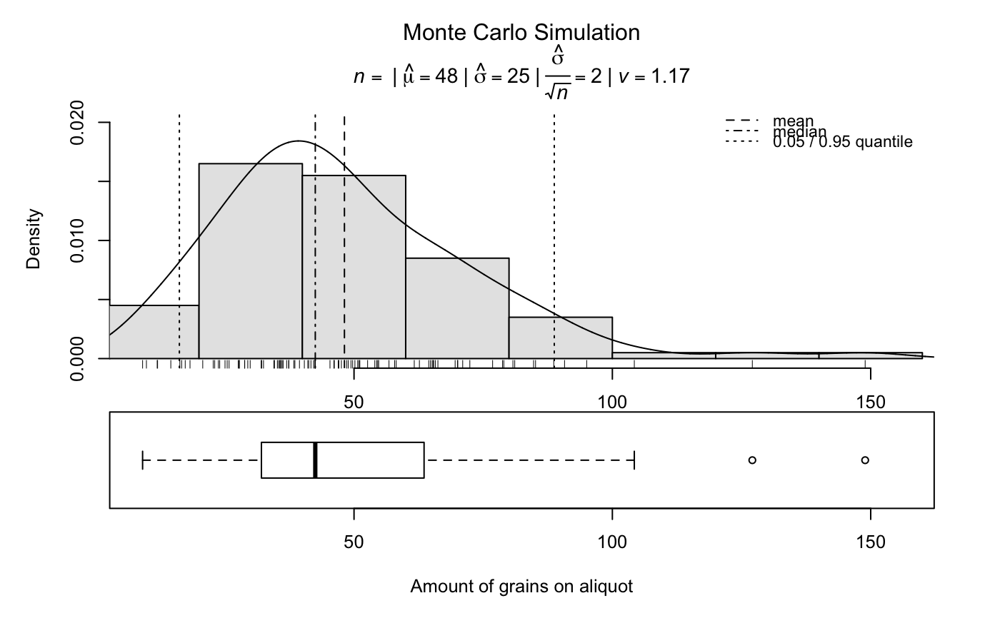

R/plot_RLum.Results.R
plot_RLum.Results.RdThe function provides a standardised plot output for data of an RLum.Results S4 class object
plot_RLum.Results(object, single = TRUE, ...)
| object | RLum.Results (required):
S4 object of class |
|---|---|
| single | logical (with default):
single plot output ( |
| ... | further arguments and graphical parameters will be passed to
the |
Returns multiple plots.
The function produces a multiple plot output. A file output is recommended (e.g., pdf).
Not all arguments available for plot will be passed!
Only plotting of RLum.Results objects are supported.
0.2.1
Christoph Burow, University of Cologne (Germany)
Sebastian Kreutzer, Geography & Earth Sciences, Aberystwyth University (United Kingdom)
, RLum Developer Team
Burow, C., Kreutzer, S., 2021. plot_RLum.Results(): Plot function for an RLum.Results S4 class object. Function version 0.2.1. In: Kreutzer, S., Burow, C., Dietze, M., Fuchs, M.C., Schmidt, C., Fischer, M., Friedrich, J., Mercier, N., Riedesel, S., Autzen, M., Mittelstrass, D., Gray, H.J., 2021. Luminescence: Comprehensive Luminescence Dating Data Analysis. R package version 0.9.11. https://CRAN.R-project.org/package=Luminescence
###load data data(ExampleData.DeValues, envir = environment()) # apply the un-logged minimum age model mam <- calc_MinDose(data = ExampleData.DeValues$CA1, sigmab = 0.2, log = TRUE, plot = FALSE)#> #> ----------- meta data ----------- #> n par sigmab logged Lmax BIC #> 62 3 0.2 TRUE -32.43138 84.14389 #> #> --- final parameter estimates --- #> gamma sigma p0 mu #> 45.64 1.56 0.02 0 #> #> ------ confidence intervals ----- #> 2.5 % 97.5 % #> gamma 38.47 53.52 #> sigma 1.34 1.90 #> p0 NA 0.28 #> #> ------ De (asymmetric error) ----- #> De lower upper #> 45.64 38.61 53.65 #> #> ------ De (symmetric error) ----- #> De error #> 45.64 3.84##plot plot_RLum.Results(mam)# estimate the number of grains on an aliquot grains<- calc_AliquotSize(grain.size = c(100,150), sample.diameter = 1, plot = FALSE, MC.iter = 100)#> #> [calc_AliquotSize] #> #> --------------------------------------------------------- #> mean grain size (microns) : 125 #> sample diameter (mm) : 1 #> packing density : 0.65 #> number of grains : 42 #> #> --------------- Monte Carlo Estimates ------------------- #> number of iterations (n) : 100 #> median : 43 #> mean : 45 #> standard deviation (mean) : 20 #> standard error (mean) : 2 #> 95% CI from t-test (mean) : 41 - 49 #> standard error from CI (mean): 2 #> ---------------------------------------------------------##plot plot_RLum.Results(grains)